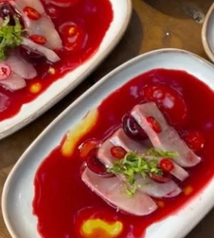
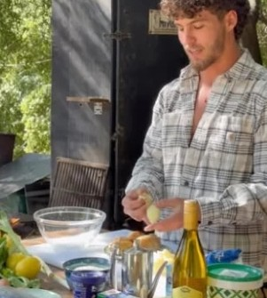
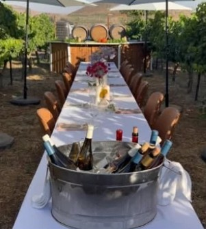
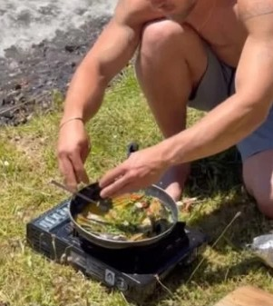

בר ליפשיץ
מבשל ומארח. כל סוף שבוע אני עורך שולחן אחד ארוך בחצר שלי במצפה מתת, עם אש, יין ותפריט שנכתב מחדש לפי מה שהגיע מהשוק. אפשר גם להזמין אותי אליכם.



האהבה שלי לבישול הגיעה מהאהבה לאירוח, ומהחיבור שזה מייצר בין אנשים.
אני מבשל לאנשים כי אני אוהב לראות שולחן מתמלא. רוב הבישול נעשה על אש פתוחה, עם חומרי גלם שאני בוחר בעצמי מדייגים, חקלאים ויקבים קטנים.
את מה שאני מגיש למדתי בדרכים: על גזייה בחופים של מערב אוסטרליה, ליד נהרות בניו זילנד, ובכרמים כאן בבית.
איך נראה ערב
בערך ארבע שעות, מהכוס הראשונה ועד הקפה. השעות משתנות קצת לפי העונה.
-
מגיעים לחצר
האש כבר דולקת. כוס יין ביד ומשהו קטן ליד הגחלים, בזמן שכולם מכירים.
-
מתיישבים לשולחן
שולחן אחד ארוך לכל האורחים. המנות הראשונות קרות ורעננות: דג נא, ירקות מהשוק, לחם חם.
-
העיקרית יוצאת מהאש
בשר בבישול ארוך, ירקות שנצלו ישר על הגחלים, ופסטה שאני מגלגל באותו בוקר.
-
קינוח וקפה
ומי שלא ממהר נשאר ליד האש עם עוד כוס.


בחצר שלי, או אצלכם
בחצר שלי, במצפה מתת
ארוחה פתוחה בכל סוף שבוע. מזמינים מקום לבד, בזוג או עם חברים, ויושבים לשולחן אחד עם שאר האורחים.
- שישי ושבת בערב
- שולחן אחד לקבוצה קטנה
- אפשר לסגור את כל השולחן לקבוצה שלכם
אצלכם בבית
אני מגיע עם חומרי הגלם, הציוד והאש, מבשל בחצר או במטבח שלכם, מגיש, ומשאיר את המקום נקי.
- ימי הולדת, ארוחות משפחה וערבים עם חברים
- תפריט שנבנה יחד איתכם
- אפשר להוסיף התאמת יינות לכל מנה
מהדרכים
עוד מהבישול שלי, בבית ובחוץ, באינסטגרם @barlif


הזמנת מקום
ממלאים את הפרטים, והם נפתחים אצלכם כהודעת וואטסאפ מוכנה אליי. אני חוזר עם זמינות, מחיר ופרטי הגעה.
המקומות לכל סוף שבוע מוגבלים, אז כדאי לכתוב כמה ימים מראש.